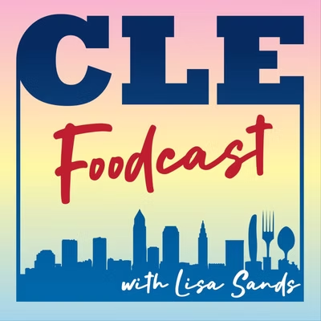
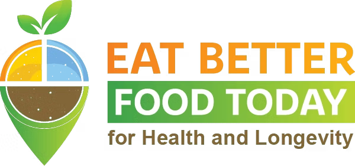
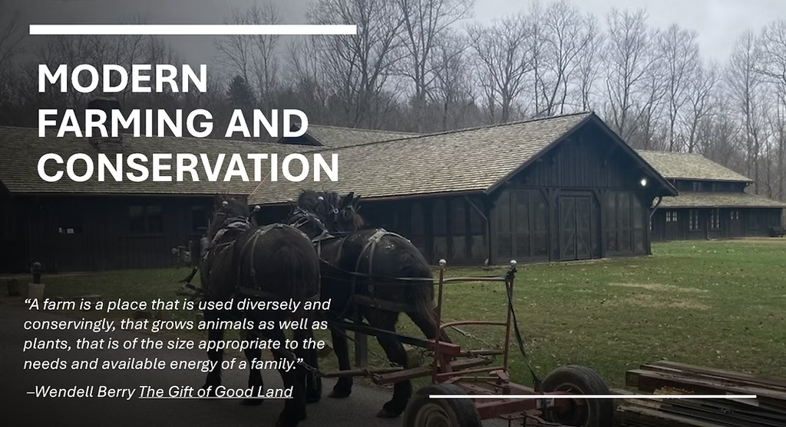

Podcasts, Talks & Tours
Long-form audio and video where Trapp Family Farm and "farming in the park" show up,interviews, episodes, and cooking segments. Why horse power? How do mixed farms in a national park work? What do you cook with eggs and a bag of vegetables? We're glad to share our story; winter is typically when we can do talks or tours,reach out to discuss.


Eat Better Food Today
Features "Mark Trapp's Omelet for Dinner",eggs plus seasonal/leftover vegetables. A straightforward model for cooking from the stand. See also Setting the Table for more farm-based cooking.

Low Power Happy Hour
We had the pleasure of sharing our farm story in the cozy Happy Days Lodge to a sold-out crowd as part of the Low Power Happy Hour series presented by the Conservancy for CVNP.
News & Sources
Source-of-record for third-party coverage and primary documents: transparency (where claims come from) and discovery (Countryside Initiative, markets, food safety, preservation). Official facts → NPS. Farm narrative → local/national profiles. How-to → Extension/USDA. Structures & fencing → preservation and wildlife resources.
Farm & program (official)
Farm & program (partner / market)
Farm profiles and journalism
- Spectrum News 1 (2021): Trapp Family Farm in Cuyahoga Valley National Park
- Spectrum News 1 (2021): New Farmer Academy
- Spectrum News 1 (2021): Countryside Initiative in the Cuyahoga Valley National Park
- Cleveland Magazine (2016): farm profile
- Cleveland Magazine (2016): tomato recipe
- National Geographic (2015): Uncle Sam Wants You to Live and Farm on a National Park
- National Geographic (2015): National Park Offers Farmland…
- Ideastream Public Media (2025): Preserving a park… (historic buildings)
Livestock, crops & food safety (Extension / USDA)
- OSU Ohioline: Raising Meat Chickens
- OSU Ohioline: Chicken Breed Selection
- OSU Ohioline: Winter and Your Backyard Chickens
- OSU Ohioline: The Making of an Egg
- USDA/FSIS: Safe temperature chart
- USDA/FSIS: Shell eggs farm to table
- USDA/FSIS: Danger zone (40°F–140°F)
- USDA/FSIS: Turkey,step-by-step cooking safely